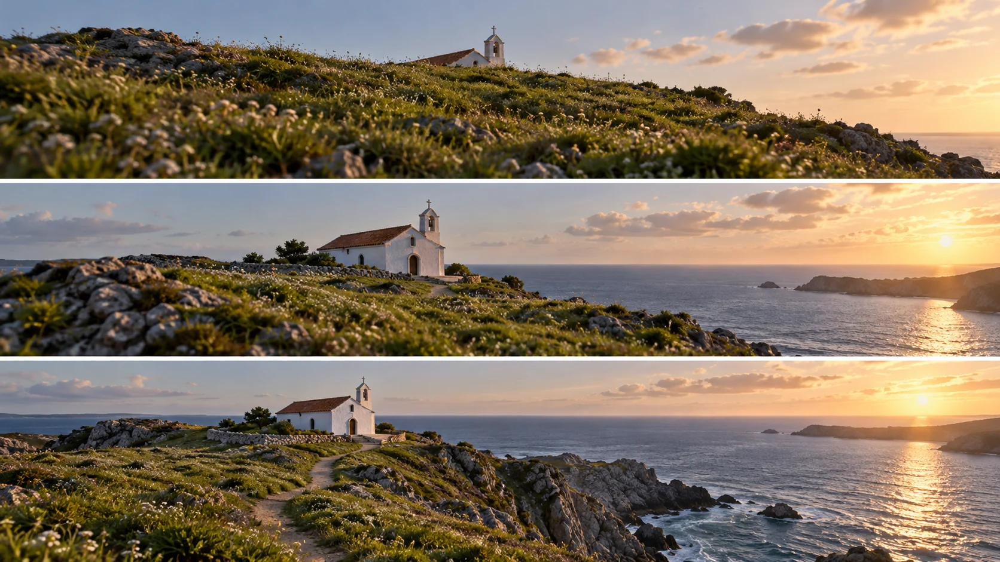

G07 · 초급 · 일반 드론
5 Simple But Amazingly Cinematic Drone Shots
기체의 이동과 카메라 틸트를 구분하고 시작·끝에서 새로 드러난 정보를 찾아낸다.
그림에서 확인할 세 가지무빙의 목적을 새로 보이는 정보로 설명한다.
1지붕만 보이는 시작
맨 위 풀과 능선 뒤로 예배당의 지붕과 종탑이 일부 보인다. 이미 알려진 건물의 존재와 아직 감춰진 크기·주변 공간을 나누어 본다.
2건물 전체의 등장
가운데는 예배당 전체와 더 넓은 바다가 드러난다. 단순히 화면이 넓어진 것뿐 아니라 앞서 가려졌던 건물의 어떤 정보가 새로 보이는지 찾는다.
3길과 절벽의 연결
맨 아래는 예배당으로 이어지는 길과 절벽, 바다가 함께 읽힌다. 건물의 모습에서 그 건물이 놓인 장소의 관계로 정보가 확장되는 부분을 본다.
촬영 설계
촬영을 이렇게 설계한다
보이지 않을 것을 정한다
본문은 카메라를 위로 기울여 피사체를 공개하는 틸트 리빌을 설명한다. 처음부터 모든 정보를 보여주지 않는 구도가 다음에 무엇이 나타날지 기다리게 한다는 해석이다.
이동과 시선을 분리한다
제작자는 틸트에 전후·상하·좌우 이동을 결합할 수 있다고 쓴다. 그러나 위치가 바뀌는 상승과 제자리에서 시선만 바꾸는 틸트는 가림과 원근을 다르게 변화시킨다.
교육 적용 · 공개량을 줄인다
예배당의 지붕부터 주변 해안까지 한 번에 공개할지 단계적으로 보여줄지 비교한다. 마지막 구도가 이미 필요한 정보를 주면 더 높이 오르거나 길게 움직일 이유를 다시 확인한다.
제작자가 틸트 리빌과 추월, 프레임 진입 등 다섯 가지 기본 숏을 설명하는 시연이다.
원본 영상5 Simple But Amazingly Cinematic Drone Shots
1. 첫 정보
시작 구도에서 이미 건물 전체가 드러났는지 본다. 리빌이 실제로 새 정보를 제공하는지 판단한다.
2. 전경의 변화
능선의 가림이 줄어드는 방식을 본다. 위치 변화와 카메라 각도 변화의 효과를 구별한다.
3. 끝의 이유
마지막에 추가된 해안 맥락을 확인한다. 공개 후 남은 이동이 장면에 새로운 의미를 더하는지 본다.
재생이 제한되면 원본 영상 새 창을 이용하세요.
제작진 설명 · 한국어 요약 번역
다섯 가지 기법이 만드는 시선의 흐름
기법 소개
Stewart Carroll은 입문자도 쓸 수 있는 다섯 가지 기법을 정리한다.
시선 흐름
틸트 리빌은 카메라를 위로 들며 대상을 드러내 기다리는 긴장을 만든다고 설명한다.
추월은 대상 위를 지나가며 시선이 배경에서 피사체로, 다시 배경으로 움직이게 한다.
프레임 진입은 피사체가 화면 밖에서 들어와 극적 기대를 만든다고 한다.
활용과 한계
크레인·지브는 드론처럼 보이지 않는 매끄러운 이동으로 장면을 여는 용도다.
탑다운은 낯선 각도라 오프닝이나 크레딧 배경에 어울린다고 한다.
이는 제작자의 연출 해설이며 모든 장면에서의 효과를 검증한 것은 아니다.
Kling 프롬프트단문 인과 체인 · 16:9
내가 직접 만들어 본다
능선에 가려진 예배당이 드론의 상승이라는 위치 변화 때문에 단계적으로 드러나는 인과를 지시한다.
- S01바닷가 능선 뒤에 작은 예배당이 숨어 있다.
- S02영상은 하나의 연속 쇼트다.
- S03처음 10초 동안 화면에는 풀밭 능선과 지붕 끝만 보인다.
- S04능선이 예배당의 몸체를 가리고 있다.
- S05드론은 그 자리에서 잠시 멈춰 기다린다.
- S06다음 10초 동안 드론이 수직으로 천천히 올라간다.
- S07드론이 올라가기 때문에 능선이 화면 아래로 내려간다.
- S08능선이 내려가자 가려졌던 예배당 전체가 드러난다.
- S09마지막 10초 동안 드론은 계속 올라가며 앞쪽 절벽을 비춘다.
- S10절벽 아래로 길과 바다가 이어져 나타난다.
- S11새 정보는 드론이 오른 만큼만 한 단계씩 나타난다.
- S12그 결과 예배당은 장소와 연결된 풍경으로 읽힌다.
[네거티브]
- 예배당이 처음부터 능선 앞에 완전히 보이는 것 금지
- 영상 중간에 컷이 들어가 장면이 끊기는 것 금지
- 종탑과 건물 벽까지 처음부터 다 보이는 것 금지
- 능선이 투명해져 건물이 비쳐 보이는 것 금지
- 드론이 기다리지 못하고 바로 앞으로 달려가는 것 금지
- 드론이 오르지 못하고 카메라만 위로 꺾이는 것 금지
- 능선이 제자리에 있고 예배당만 솟아나는 것 금지
- 예배당이 갑자기 화면에 튀어나오듯 생기는 것 금지
- 드론이 오르다 멈추고 옆으로 빠지는 것 금지
- 길과 바다가 예배당과 무관하게 따로 보이는 것 금지
- 모든 정보가 한꺼번에 화면에 쏟아지는 것 금지
- 예배당이 지나치게 작아져 풍경에 묻히는 것 금지
결과에서 볼 것
- 처음에 지붕 끝만 보였는가
- 드론이 오른 만큼 능선이 내려가며 건물이 드러났는가
- 마지막에 길과 절벽과 바다로 정보가 확장되었는가